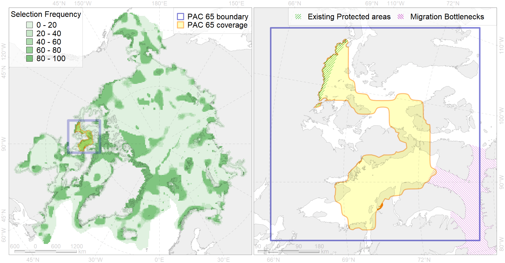

Region 65
Region 65
“ArcNet” scenario 33 achievement for region 65.
Use Accenter for advanced mode.

0
CFs inside of Region completely
9
CFs inside of Region at quarter
11
Complete-targets achievement by Region
25
Half-targets achievement by Region
| CF | Name | Target Achievement for Region | Proportion of Target Achievement in Region | Amount Proportion in Region |
|---|---|---|---|---|
| 9008 | polar bear of the GB (Gulf of Boothia) subpopulation distribution | 245.8% | 96.3% | 83.7% |
| 5094 | Narwhal Somerset Island stock summer core distribution | 100.5% | 96.8% | 73.0% |
| 9026 | polar bear denning areas of GB (Gulf of Boothia) subpopulation | 97.7% | 97.1% | 72.2% |
| 9031 | polar bear denning areas of MC (M’Clintock Channel) subpopulation | 89.5% | 88.6% | 66.4% |
| 5004 | Beluga of the Baffin Bay summer distribution | 98.8% | 62.1% | 56.5% |
| 9013 | polar bear of the MC (M’Clintock Channel) subpopulation distribution | 93.7% | 71.1% | 39.2% |
| 8036 | Salt marshes of the Baffin Bay LME | 93.9% | 61.3% | 31.4% |
| 5093 | Narwhal Somerset Island stock summer distribution | 51.7% | 51.7% | 29.1% |
| 6007 | Brent goose (Branta bernicla hrota) Atlantic breeding&moulting grounds | 132.0% | 49.7% | 26.8% |
| 7136 | III.1.1.3. Archipelago inner shelf of low and medium profile | 307.7% | 53.1% | 24.1% |
| 5065 | Killer whale summer feeding areas in the North West Atlantic | 363.5% | 37.1% | 23.6% |
| 2004 | Bearded seal whelping areas in the south of the Canadian Archipelago | 70.4% | 62.7% | 22.1% |
| 3052 | Multiyear Ice distribution in September in the Baffin Bay LME | 98.8% | 23.7% | 19.5% |
| 2007 | Bearded seal whelping areas in the Baffin Bay | 64.3% | 22.4% | 16.6% |
| 7036 | Amundsen Gulf - Cambridge Bay transiztional zone | 69.6% | 30.4% | 15.7% |
| 5039 | Bowhead whale autumn concentrations in the Baffin Bay | 31.6% | 31.4% | 15.6% |
| 5005 | Beluga of the Baffin Bay summer core distribution | 19.5% | 18.2% | 14.9% |
| 7021 | Eastern Canadian Archipelago region | 126.2% | 21.0% | 13.6% |
| 7133 | III.1. Canadian Arctic Archipelago shelf and margin | 251.4% | 21.9% | 12.1% |
| 5041 | Bowhead whale summer concentrations in the Baffin Bay | 22.2% | 21.4% | 11.7% |
| 7137 | III.1.1.4. Canadian Archipelago glacial troughs | 220.4% | 34.1% | 11.7% |
| 3006 | Fast Ice distribution in the Canadian Archipelago region | 142.9% | 33.9% | 10.5% |
| 8030 | Salt marshes of the Beaufort Sea LME | 26.8% | 16.4% | 8.1% |
| 4009 | Feeding / nursery area of the Arctic Cisco (Coregonus autumnalis), American populations (F 14) | 17.4% | 12.8% | 8.0% |
| 2044 | Ringed seal whelping areas in the Baffin Bay region | 26.9% | 13.1% | 7.1% |
| 3034 | Marginal Ice Zone distribution in July in the Baffin Bay LME | 24.2% | 10.0% | 6.7% |
| 4062 | Range of the White Sea eelpout (Lycodes marisalbi), American population (F 51) | 80.0% | 11.1% | 6.5% |
| 4074 | Fish zoogeography, Arctic Region, High-Arctic Shelf Province, Canadian-Greenland District (10A) | 75.3% | 11.1% | 6.5% |
| 9011 | polar bear of the LS (Lancaster Sound) subpopulation distribution | 16.0% | 7.2% | 6.4% |
| 7134 | III.1.1. 1. Canadian Arctic Archipelago shelf | 73.3% | 12.2% | 5.8% |
| 9029 | polar bear denning areas of LS (Lancaster Sound) subpopulation | 6.8% | 6.8% | 5.6% |
| 3032 | Marginal Ice Zone distribution in July in the Beaufort Sea LME | 17.0% | 16.0% | 5.2% |
| 4011 | Feeding area of the Lake whitefish (Coregonus clupeaformis) (F 16) | 10.3% | 9.8% | 4.9% |
| 4029 | Feeding area of the Arctic charr (Salvelinus alpinus), anadromous populations (F28) | 10.5% | 9.1% | 4.7% |
| 2061 | Ringed seal circumpolar foraging areas as predicted by MIZ distribution | 17.2% | 9.0% | 4.7% |
| 4053 | Range of the Fourhorn Sculpin (Myoxocephalus quadricornis) (F 45), Euro-Asian populations | 129.0% | 7.7% | 4.5% |
| 2021 | Harp seal foraging areas in the Baffin Bay region | 15.8% | 7.4% | 4.2% |
| 4055 | Range of the Shorthorn Sculpin (Myoxocephalus scorpius) (F 46), American populations | 110.4% | 6.3% | 3.7% |
| 7146 | III.2.2.1. Archipelago slope in Baffin Bay and Lancaster Sound | 54.4% | 7.1% | 3.7% |
| 4007 | Feeding/nursery area of the Cisco (Coregonus artedi) (F 13) | 9.7% | 6.8% | 3.6% |
| 4019 | Feeding area of the Vendace, Least cisco (Coregonus sardinellа), American populations (F 20) | 11.8% | 5.9% | 3.1% |
| 4048 | Feeding/nursery area of the ogac (Gadus ogac ) (F 41) | 21.4% | 5.3% | 3.0% |
| 7024 | Western Canadian archipelago region | 13.7% | 11.5% | 2.8% |
| 4037 | Distribution of the Glacial cod (Arctogadus glacialis) (F34) | 19.1% | 4.6% | 2.0% |
| 6010 | Brent goose (Branta bernicla nigricans) American breeding&moulting grounds | 6.3% | 4.5% | 2.0% |
| 6083 | Thick-billed murre (Uria lomvia lomvia) wintering grounds | 5.1% | 3.6% | 1.3% |
| 7139 | III.1.1.6. Foxe Basin middle shelf | 7.7% | 2.9% | 1.2% |
| 6029 | Glaucous gull (Larus hyperboreus euceretes) breeding grounds | 9.9% | 2.3% | 1.2% |
| 9025 | polar bear denning areas of FB (Foxe Basin) subpopulation | 0.9% | 0.9% | 0.8% |
| 4041 | Range of the Polar Cod (Boreogadus saida) (F35) | 5.7% | 2.2% | 0.8% |
| 4042 | Range of the Saffron cod (Eleginus gracilis) (F 36) | 12.1% | 1.8% | 0.8% |
| 3050 | Multiyear Ice distribution in September in the Beaufort Sea LME | 2.4% | 1.6% | 0.6% |
| 4058 | Range of the Arctic flounder (Liopsetta glacialis) (F48) | 5.8% | 0.7% | 0.4% |
| 6041 | Ivory gull (Pagophila eburnea) postbreeding grounds in the Canadian Arctic | 1.4% | 0.5% | 0.3% |
| 5103 | Bowhead whale Baffin population spring-autumn distribution | 0.8% | 0.5% | 0.2% |
| 6015 | Black guillemot (Cepphus grylle mandti) breeding grounds | 1.3% | 0.3% | 0.2% |
| 4059 | Range of the Greenland Halibut (Reinhardtius hippoglossoides) (F 49) | 6.6% | 0.6% | 0.2% |
| 7138 | III.1.1.5. Foxe Basin shallow shelf | 1.2% | 0.4% | 0.2% |
| 6099 | 6099 Rissa tridactyla tridactyla breeding colonies | 0.1% | 0.1% | 0.1% |
| 1002 | Atlantic Walrus Summer Distribution in Canada | 0.3% | 0.2% | 0.1% |
| 4016 | Feeding area of the Broad whitefish (Coregonus nasus), Euro-Asian populations F 19 | 0.1% | 0.1% | 0.0% |
| 6094 | 6094 PagophileburneCanadian breeding colonies | 0.0% | 0.0% | 0.0% |
| 3126 | polynya Baffin | 0.1% | 0.0% | 0.0% |
| 5112 | Arctic Cetaceans (beluga, bowhead, narwhal) winter habitats as predicterd by MIZ | 0.0% | 0.0% | 0.0% |
| 4035 | Feeding area of the Lake trout (Salvelinus namaycush) (F32) | 0.0% | 0.0% | 0.0% |